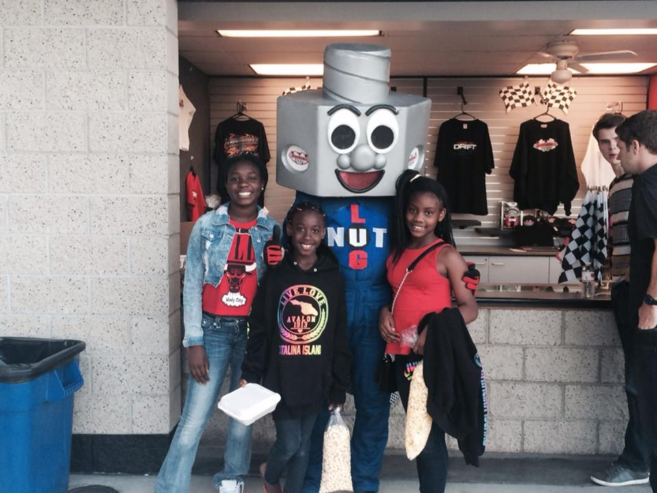

 <h> STORY TIME!
<p style="padding:20px;">  One year I went to California for my whole summer. I did many thing but I had this one embarrassing story. So , we went to my cousin friend house and she was like we could go swimming. Me, my sister, and my cousin went and put on our bathing suites. The whole time everybody thought I could swim. All of us went out there and got in the pool. Before we walked out i asked how dept was the pool and she said 3 ft but it gets deeper. My first thought was it might just go to 6 feet or something. So, we was outside in the pool and decided to play fish across the ocean. Remind you the pool didnt had the feet on the side because it was a hand built pool in her back yard. So , it was my cousin go. She yelled "Fish across the ocean." Me and my sister began run all over the pool. So , as im running I just do a big drop in like the middle part of the pool. Yeah, I was running an ran myself to the 12 feet. I instantly started panic because im not a good swimmer. My 10 year old sister and cousin had to come save me. After , I was just in a shock mode I was crying and laughing at the same time. Cause after it really was funny. But I bet I learned to stay on the wall in the front of the pool. Other than that I had so much fun out there. I went to Catalina Island. I went ziplining and did various of other activites. They are very expense up there too. But in Cali I had a very great experience out there. I'll be back soon Erica!  
 


   

  <body style="background-color:blue" >
